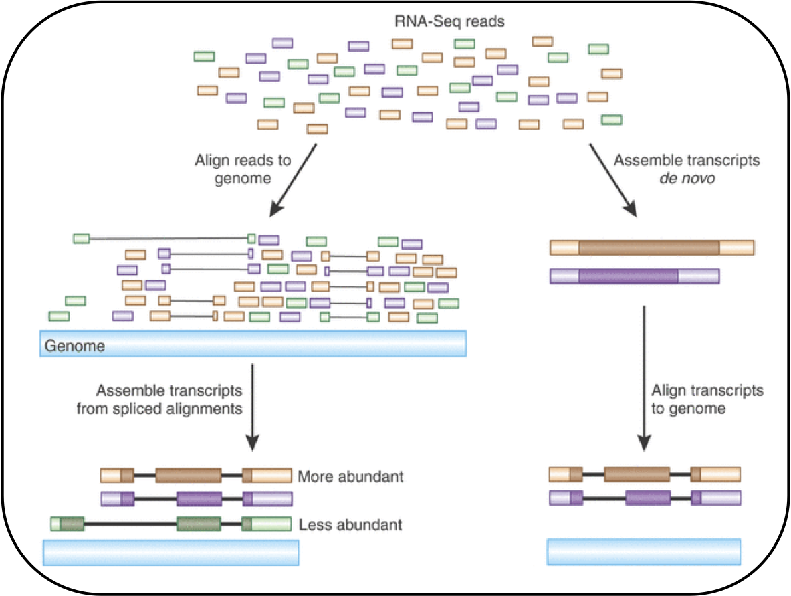
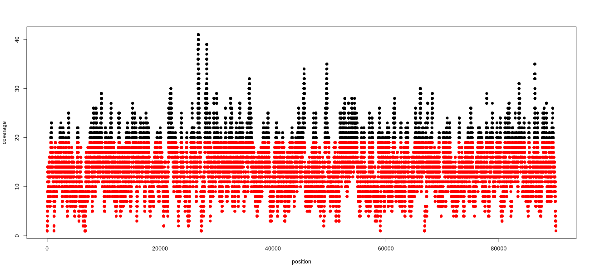

Learn the tools used for aligning sequencing reads to a reference genome
sequence-analysis
read-mapping
CLI
Author
Jan Emmanuel Samson
Published
January 3, 2025
Read mapping is the process of aligning individual sequencing reads to a reference, whether it be a genome or transcriptome, as illustrated in Figure 1. The process requires no knowledge of the set of transcribed region or the way in which exons are spliced together. This allows for the discovery of new, unnotated transcripts.

Figure 1: Alignment of reads to a reference genome (left) or assembled contigs (right).
There are many tools and algorithms that have been implemented for this read mapping and many of these tools tolerate a degree of mismatch to allow a higher proportion of the reads to be heuristically aligned.
Considerations
One consideration when choosing a mapper is the type of data that it was designed for (DNA, RNA, miRNA, bisulphite). Another dimension to consider is the sequencing platform that generated the HTS data. Some mappers are generalizable across data types which allows the alignment of any sequences, hence the source of data is irrelevant as long as the stored data fits the specifications of the tool. Examples include BLAT, SSAHA, Exonerate, and Mummer.
Some mappers were built for handling a subset of sequencing technologies such as Slider which works well for Illumina data and exploits the base call probabilities present in its output files. In contrast, mappers such as SOCS, RNA-MATE, and MapReads are catered towards aligning SOLiD reads which are encoded in color space. Mappers such as SOAP, Bowtie, or Novoalign exploit the biases found in Illumina reads and have functionality to trim bases off the 3’-end reads in an attempt to reduce this bias.
Mapping RNA Reads
In eukaryotes, genes can be spliced differentially to generate a wide variety of products from the same gene set. Thus, RNA-seq reads that are mapped to a reference genome can display large gaps in the alignment. This is especially the case when reads span multiple exons. Mappers overcome this issue by detecting splice junction locations by using de novo methods or referring to an exon junction library.
Variation and Errors
Mappers must allow for the approximate matching between reads and the reference to cope with errors and variation. More errors should be permitted when aligning long reads or reads from a different species. Five mismatches in a read with 36 bases (14%) is quantitatively different from five mismatches in a read with 500 bases (3%).
The challenge is to distinguish between true genetic variation and sequencing errors. Mappers such as ELAND, VMATCH, and WHAM permits a small number of mismatches while mappers like MapReads, MicroRazerS, and mrsFast accounts for an arbitrary number of mismatches. Some tools such as BWA support indels while others impose no constraints on the number of mismatches and indels (e.g., Bowtie2, GNUMAP, Mosaik, RazerS, SSAHA2, VMATCH, SHRiMP2).
A Survey of Tools for Mapping
Short-Read Mappers
BWA
Bowtie2
Minimap2
Long-Read Mappers
RazerS
BWA-SW
SOAP2
RUM
RMAP
SOAPSplice
Bowtie2
Splice Aligners
MapSplice
TopHat*
Supersplat
SOAPSPlice
SpliceMap
RNA-Mate*
RUM*
PASS
QPALMA
MapSplice
*Wrappers that can use a variety of mappers
The SAM Format
The SAM (Sequence Alignment/Map) format is a file specification use to store information related to the computed read alignment in tabular form. The format consists of multiple columns which are described in Table 1:
Table 1: SAM file fields.
Col
Field
Description
1
QNAME
Query (pair) NAME
2
FLAG
bitwise FLAG
3
RNAME
Reference sequence NAME
4
POS
1-based leftmost position/coordinate of clipped sequence
5
MAPQ
Mapping quality in Phred scale
6
CIGAR
Extended CIGAR string
7
MRNM
Mate reference sequece name
8
MPOS
1-based mate position
9
ISIZE
Inferred insert size
10
SEQ
Query sequence on the same strand as the reference
11
QUAL
Query quality
12
OPT
Optional fields in the format TAG:VTYPE:VALUE
Getting Started
Downloading Data
For this tutorial, we will be using a set of pair-end reads that has been processed (adapter trimmed and quality filtered). A review on the steps involved in quality control can be found in this page. The filtered reads will then be mapped to a reference genome.
Save the sequencing reads and reference genome to a designated directory:
mkdir data/# Download and decompress readswget-O data/trimmed.tar.gz https://osf.io/m3wpr/downloadtar xvzf data/trimmed.tar.gz# Download and decompress reference genomewget-O data/assembly.tar.gz https://osf.io/t2zpm/downloadtar xvzf data/assembly.tar.gz
Environment Setup
Download the conda environment file here to your current working directory. Install the dependencies by running:
conda create -f env.yml
conda will install the following programs:
bwa
samtools
qualimap
R
Workflow
Indexing the Reference Genome
Generate an index of the reference genome:
bwa index data/assembly/scaffolds.fasta
Read Alignment using bwa
Align the ancestral pair-end reads to the indexed genome using bwa:
# Store path to reference genomeREF=data/assembly/scaffolds.fasta# Store paths for each FASTQ in an arrayANC_READS=(data/trimmed/anc_R1.fastq.gz data/trimmed/anc_R2.fastq.gz)# Align ancestral reads to referencebwa mem ${REF}${ANC_READS[0]}${ANC_READS[1]}> output/bwa/anc.aln.sam
Try mapping the two sets of evolutionary reads to the reference genome.
# Path to referenceREF=data/assembly/scaffolds.fasta# Align first set of evolutionary readsEVOL1_READS=(data/trimmed/evol1_R1.fastq.gz data/trimmed/evol1_R2.fastq.gz)bwa mem ${REF}${EVOL1_READS[0]}${EVOL1_READS[1]}> output/bwa/evol1.aln.sam# Align second set of evolutionary readsEVOL2_READS=(data/trimmed/evol2_R1.fastq.gz data/trimmed/evol2_R2.fastq.gz)bwa mem ${REF}${EVOL2_READS[0]}${EVOL2_READS[1]}> output/bwa/evol2.aln.sam
SAM Post-Processing
We will use samtools to manipulate the outputted alignment files.
Fix mates and compress
samtools sort -n-O sam output/bwa/anc.aln.sam|samtools fixmate -m-O bam - output/samtools/anc.fixmate.bam
1
Sort mapped reads by position
2
Fix read mates and compress to binary format
The -m flag adds the mate score tags and -O specifies the output format to be in binary.
Below is an R script that plots the read coverage across the reference genome location. The resulting graph is seen in Figure 2.
# Load in aligned reads from NODE 20data <-read.table("output/samtools/NODE20.depth.txt.gz", sep ="\t", header =FALSE, strip.white =TRUE)# Plot and save as pngoutfile <-"plots/covNODE20.png"png(outfile, width =1300, height =600)plot(data[, 2], data[, 3], col =ifelse(data[, 3] <20, "red", "black"), pch =19, xlab ="position", ylab ="coverage")dev.off()

Figure 2: Coverage plot of the ancestral reads for contig 20 of the reference genome.
Generating Mapping Statistics with qualimap
A more in-depth analysis can be conducted using qualimap. Run the tool by invoking the bamqc subcommand, passsing in the sorted BAM file as a positional argument:
Like FASTQC, qualimap produces an HTML (or PDF) report that provides a mapping summary. The output of the tool is provided below:
Filtering by Mapping Score
Alignment files in SAM format consists of a column that stores the MAPQ score pertaining to the quality of an alignment. MAPQ scores are Phred-scaled and can be computed using the following formula:
\[ \text{MAPQ} = -10 \times \log{10}(p) \]
The variable p is the probability that the read is incorrectly mapped to the reference.
The Bowtie2 documentation defines medium quality mappings as alignments with a MAPQ score of at least 20. We can subset the deduplicated reads based on this criterion as follows:
Save the following code as a bash script and pass in the paths to the pair-end reads, as well as a prefix for keeping track of output files, as the only three positional arguments. The R code for producing the quality graphs were not included for brevity.
#!/usr/bin/env bashset-eu# Specify the filenames of the forward and reverse readsR1=$1R2=$2PREFIX=$3# Path to reference assemblyREF=data/assembly/scaffolds.fasta# Generate genome indexbwa index ${REF}# Map "anc" reads to referencebwa mem ${REF}${R1}${R2}>output/bwa/${PREFIX}.aln.sam# Fix mates and compressmkdir-p output/samtoolssamtools sort -n-O sam output/bwa/${PREFIX}.aln.sam |samtools fixmate -m-O bam - output/samtools/${PREFIX}.fixmate.bam# Sort by genome coordinatesamtools sort -O bam -o output/samtools/${PREFIX}.sorted.bam output/samtools/${PREFIX}.fixmate.bam# Remove duplicatessamtools markdup -r-S output/samtools/${PREFIX}.sorted.bam output/samtools/${PREFIX}.sorted.dedup.bam# Generate mapping statisticsmkdir-p output/qualimapqualimap bamqc -outdir output/qualimap -outformat PDF -bam output/samtools/${PREFIX}.sorted.dedup.bam